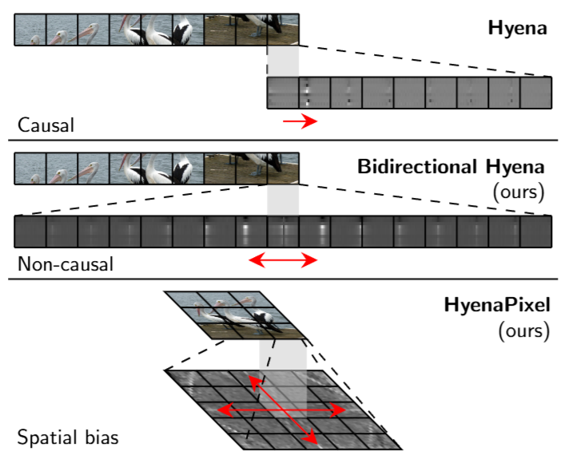

Julian Spravil
I’m a PhD student in the Autonomous Intelligent Systems Group at the University of Bonn and a research engineer at Fraunhofer Institute for Intelligent Analysis and Information Systems. My research interests include multimodal and multilingual machine learning as well as human-centered applications.
Research
My research in multimodal machine learning integrates vision, language, and audio to build assistive systems. Representative papers are highlighted.
-
 Scaling Laws for Conditional Emergence of Multilingual Image Captioning via Generalization from TranslationJulian Spravil, Sebastian Houben, Sven BehnkearXiv preprint, March 2025Scaling model size, training samples, and multilinguality enables image captioning in unseen languages via translation as auxiliary task, however, fine-tuning with full task-language coverage remains essential.
Scaling Laws for Conditional Emergence of Multilingual Image Captioning via Generalization from TranslationJulian Spravil, Sebastian Houben, Sven BehnkearXiv preprint, March 2025Scaling model size, training samples, and multilinguality enables image captioning in unseen languages via translation as auxiliary task, however, fine-tuning with full task-language coverage remains essential. -
HyenaPixel: Global Image Context with ConvolutionsJulian Spravil, Sebastian Houben, Sven BehnkeEuropean Conference on Artificial Intelligence (ECAI) 2024HyenaPixel builds on the Hyena operator, extending it to bidirectional and 2D processing to capture global image context with large convolutions, enabling transformer-level accuracy without attention.